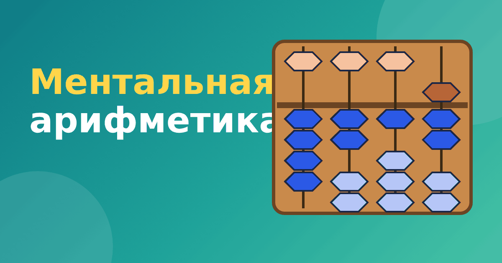

Что такое ментальная арифметика: простыми словами для родителей

Ментальная арифметика для детей всё чаще встречается в рекламе кружков и школ: «считай в уме быстрее калькулятора», «развиваем оба полушария». Родителям трудно понять, где здесь польза, а где маркетинг. Давайте разберёмся спокойно: что такое ментальная арифметика, как она устроена, чему реально учит и что от неё стоит ожидать.
Что такое ментальная арифметика
Ментальная арифметика — это система счёта, в которой ребёнок сначала учится считать на специальных счётах, а потом представляет эти счёты в голове и считает по мысленной картинке. Слово «ментальная» означает «мысленная»: вычисления идут без бумаги, калькулятора и самих счётов.
Основа метода — японские счёты соробан, которые чаще называют абакусом. Это рамка со стержнями, на каждом из которых нанизаны бусины. Каждый стержень отвечает за одну цифру числа: единицы, десятки, сотни и так далее. Двигая бусины, ребёнок «записывает» число и выполняет действия.
Как устроен метод: два этапа
Обучение обычно делится на два больших этапа.
- Работа с абакусом. Ребёнок физически передвигает бусины пальцами. Он учится набирать числа, складывать и вычитать по строгим правилам. Здесь тренируется мелкая моторика и внимание к порядку действий.
- Мысленный счёт. Счёты убирают. Ребёнок закрывает глаза или смотрит на пустой стол и представляет абакус, а пальцами «двигает» воображаемые бусины. Ответ он читает по мысленной картинке.
Переход от первого этапа ко второму не мгновенный. Обычно проходит несколько месяцев регулярных занятий, прежде чем ребёнок уверенно считает на воображаемом абакусе. Подробнее о самом мысленном этапе мы рассказали в статье как работает ментальный счёт.
Какие действия можно выполнять
Основные действия — сложение и вычитание. Именно они лежат в основе абакуса, и именно на них строится весь курс. Позже добавляются умножение и деление, а в продвинутых программах — дроби и извлечение корней. Но важно понимать: умножение и деление на абакусе сводятся к цепочкам сложений и вычитаний, и осваивать их заметно сложнее. Об этом отдельная статья про умножение и деление на абакусе.
Пример: как «читается» число на абакусе
На соробане у каждой цифры свой стержень. Верхняя бусина стоит как 5, каждая из четырёх нижних бусин стоит как 1. Бусина считается только тогда, когда её прижали к средней перекладине.
Число 7 на стержне получается так: прижимаем верхнюю бусину (это 5) и две нижние (2 + 5 = 7). Число 4 — четыре нижние бусины, верхняя остаётся на месте. Число 4 217 занимает четыре стержня: на первом четыре нижние бусины, на втором две нижние, на третьем одна нижняя, на четвёртом верхняя и две нижние.
Увидеть это своими глазами проще, чем прочитать. Первый модуль нашего тренажёра «Ментальная арифметика» бесплатный: там виртуальный абакус, на котором можно двигать бусины нажатием.
Что ждать от занятий
Главное, чему учит ментальная арифметика, — быстро и аккуратно считать небольшие числа без опоры на бумагу. Для этого нужны внимание, терпение и регулярность. Ребёнок, который каждый день занимается по 10–15 минут, постепенно действительно начинает считать быстрее и увереннее.
Чего не стоит ожидать: что любой ребёнок станет «счётным гением» за пару месяцев и что навык автоматически улучшит все школьные оценки. Убедительных научных доказательств, что ментальная арифметика развивает интеллект в целом, немного, а результаты исследований неоднозначны. Мы разбираем это в статье что развивает ментальная арифметика, где честно разделяем доказанное и предполагаемое.
Кому подойдёт, а кому нет
Метод хорошо подходит детям, которым нравится аккуратная, пошаговая работа и визуальные образы. Тем, кто любит двигать предметы руками и видеть результат, абакус нередко даётся с удовольствием. Ребёнку, которому трудно сидеть на месте и повторять одни и те же действия, занятия могут показаться скучными, и тогда лучше выбрать более подвижный формат или другой метод. Подробнее о возрасте — в материале с какого возраста начинать ментальную арифметику.
Откуда взялся метод
Метод ментальной арифметики вырос из японской традиции счёта на соробане. В Японии счёт по воображаемому абакусу называют анзан, и он давно существует как отдельный навык: дети и взрослые участвуют в соревнованиях по счёту. Позже метод распространился по другим странам, и появились школы, которые учат ему маленьких детей. Из-за этого сегодня «ментальной арифметикой» называют очень разные программы: где-то это настоящий курс на несколько лет, а где-то короткие занятия для знакомства.
Частые вопросы
Нужен ли абакус дома?
Не обязательно. На первых порах хватает виртуального, а настоящий можно купить позже, если ребёнок увлёкся.
Итог
Ментальная арифметика — это не волшебство, а система тренировки счёта с понятной логикой: сначала руки и счёты, затем воображение. Если ребёнку нравится, она может стать интересным способом освоить сложение и вычитание и приучиться к регулярным занятиям. Если не нравится, это не повод для тревоги: у школьной математики много других путей.